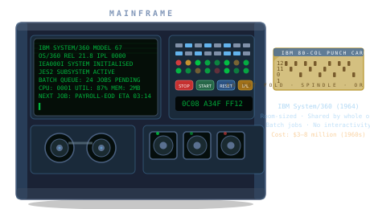
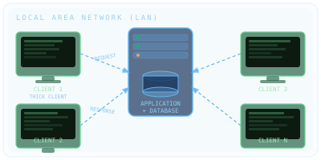
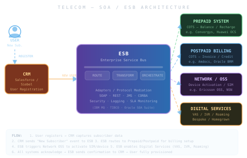
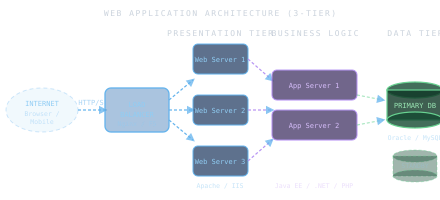

How the IT industry evolved over seven decades — and how Google, Amazon, Facebook & Netflix accidentally invented cloud computing.
Seven decades of computing — the two defining eras divided by the internet
Computing begins — massive machines, tiny teams, no keyboards, no screens

Computers shrink from rooms to desks — putting power directly in users' hands — then the browser opens those desks to the entire internet



Four companies rewired what the world expects from software — and from infrastructure
Internal systems face the internet. The SaaS model shows enterprises they don't need to own anything.
Amazon built infrastructure for peak retail load. The idle off-peak capacity became a product.
From yearly big-bang releases to continuous deployment — the cloud enabled a completely different pace
If you remember nothing else — remember these
From a punch card in 1952 to a billion-user global cloud platform in 2024 — the pace of change is still accelerating. You'll shape the next chapter.